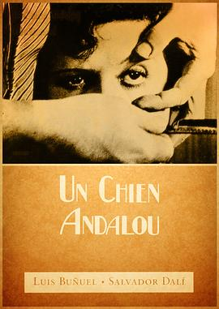

一条安达鲁狗 / Un chien andalou
又名：一条安德鲁犬(港) / 安达鲁之犬(台) / 安达卢西亚之犬 / 一条叫安达鲁的狗 / An Andalusian Dog
女人看着伸出的手腕上的手表，而后出手拉下的镜头以后我必将致敬。切开的眼睛与手掌里的蚂蚁都好猎奇哦。实话说我真没看懂，但就像做了场梦一样畅快。
作品信息
| 导演 | 路易斯·布努埃尔 |
| 编剧 | 萨尔瓦多·达利 / 路易斯·布努埃尔 |
| 主演 | 西蒙妮·玛勒伊 / Pierre Batcheff / 路易斯·布努埃尔 / 萨尔瓦多·达利 / 罗贝尔·奥梅 |
| 类型 | 短片 / 奇幻 |
| 制片国家/地区 | 法国 |
| 语言 | 法语 |
| 上映日期 | 1929-06-06(法国) |
| 片长 | 16分钟 |
| IMDb | tt0020530 |
说过什么
2025-06-07 17:09:03
广播 · 看过 · ★★★★★
女人看着伸出的手腕上的手表，而后出手拉下的镜头以后我必将致敬。切开的眼睛与手掌里的蚂蚁都好猎奇哦。实话说我真没看懂，但就像做了场梦一样畅快。
2022-02-13 18:48:08
广播 · 想看
最后一次看到是 2026-10-07T23:13:34+08:00 · 豆瓣原页